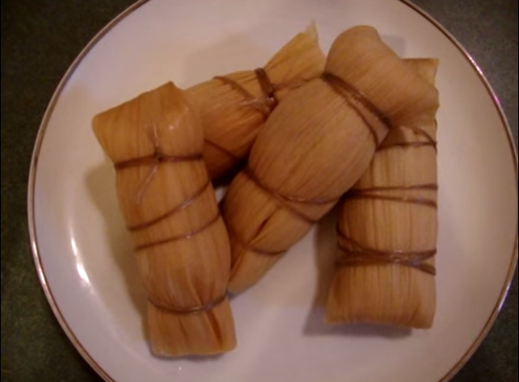
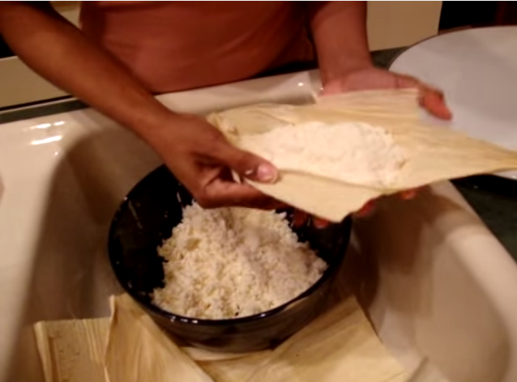

Bollos de Yuca
Son ideales para el desayuno, para regalar, celebrar la vida “slow” o para comer tranquilamente si se es celiaco. Se elaboran en la costa atlántica de Colombia y en Panamá con ingredientes como el maíz, la yuca, la batata o el plátano.
Ingredientes
- 4 lb deYuca
- Tusas
- Pita
- Rallador
- Tela de franela
Preparación
Iniciamos pelando la yuca, se recomienda hacerlo con un cuchillo haciendo tajos verticales para crear una superficie rugosa y no se resbale a la hora de rallarla. Luego se ralla la yuca.
Cuando esté lista la masa, de a porciones vamos colocando en la tela y exprimimos en un tazón . El agua que genera nos dará al final el almidón que necesitamos para que la masa pueda pegar. La masa exprimida la vamos dejando en un plato aparte.
Para obtener el almidón hay que dejar sedimentar(reposar) el agua por 30min. Transcurridos los 30min. escurrimos cuidadosamente el agua amarillenta, quedando como resultado una capa blanca en el fondo del tazón.
Procedemos a echarle el almidón a la masa anteriormente guardada. Mezclar y amasar por 5 min.
Ahora se cojen de a 2 hojas de tusa por bollo, creamos una empecie de canaleta o barquillo entre las 2, en el medio echamos una porción la masa dandole forma y compactandola. Doblamos las tusas para cerrar y añadimos una tercera para ajustar. Se envuelve con la pita, atandolos fuertemente y finalizamos con un nudo para tener listo nuestro bollo de yuca.
En una olla con agua hirviendo, metemos los bollos al agua y dejamos hervir de 45min. a 1hr. dependiendo del tamaño. Se deben escurrir unos 15min. Y listo.